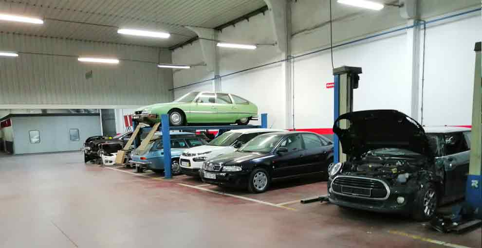
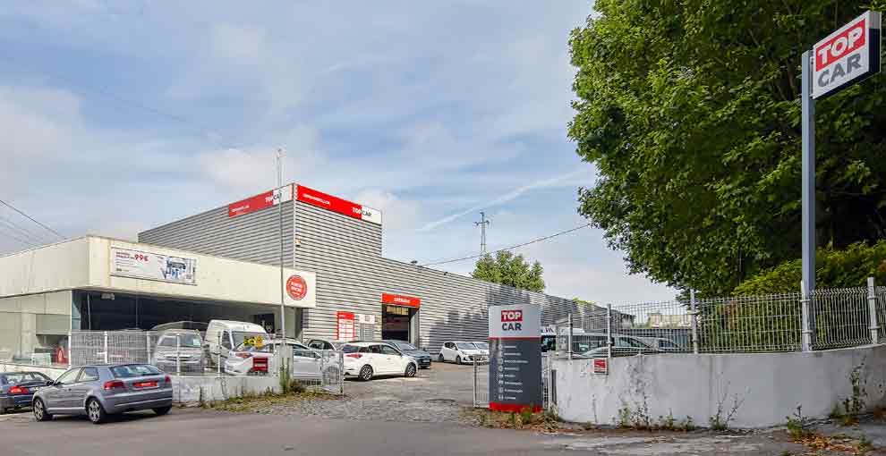

GoodParts · Oficina TOPCAR · Maia
O seu carro.
Nas mãos
da nossa oficina.
Manutenção, diagnóstico e reparação multimarca. Conheça o espaço e fale connosco sobre a sua viatura.
Pedir contactoCuidados para a sua viatura
Um ponto de partida.
Para cada necessidade.
Um ruído, uma revisão ou uma reparação de chapa. Comece pelo que precisa e conheça os serviços da oficina.
Manutenção e mecânica
Do acompanhamento do automóvel às reparações de componentes mecânicos.
Diagnóstico e eletrónica
Uma área dedicada à identificação e resolução de problemas do automóvel.
Chapa e pintura
Recuperar os painéis, os acabamentos e o aspeto da sua viatura.
Pneus e alinhamento
Cuidados com os pneus e a direção do automóvel.

Rua do Souto, 600 · MaiaConheça a GoodParts
A oficina
por dentro.
Somos uma oficina TOPCAR na Maia, com serviços de mecânica, eletrónica, diagnóstico, colisão e lavagem.
Antes de nos entregar a sua viatura, pode conhecer as instalações e falar connosco sobre o trabalho de que precisa.
Conhecer a oficinaO próximo passo
Conte-nos o que
o seu carro precisa.
Escolha o serviço e partilhe os detalhes. A equipa confirma consigo a intervenção e a disponibilidade.
Pedir contacto